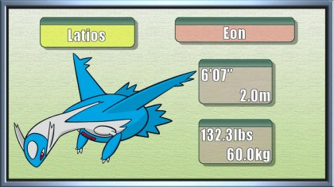

| Pokémon of the Week - May 14th 2017 | ||||
|---|---|---|---|---|
|  | ||||
| Overview | Ever since its introduction, Latios has been a real behemoth of a Pokemon, especially with its signature Soul Dew item in tow. While Latios and his sister Latias have often been banned from the standard metagame in many competitive rulesets, over the past couple of generations, communities that had previously banned the Lati twins have given them a shot amongst the commoners (without the Soul Dew, of course). While not as dominating as he might have been in the first two generations of his existence, Latios has still made a name for himself by being one of the most consistently threatening and useful Pokemon out there. His high Special Attack and decent Attack stats make him quite the bruiser against slower teams, and an impressive base 110 Speed stat ensures that he won't be outrun easily. Combined with an incredibly powerful STAB Draco Meteor, a decent secondary STAB Psyshock, and a handful of useful coverage moves. | |||
| Positives |
+Base 130 Special Attack is difficult to ignore, and base 90 Attack is average. Combined, they give Latios an impressive set of mixed offenses. +Base 110 Speed isn't quite what it used to be, but it's still pretty quick. +Latios's Dragon/Psychic typing is a bit of a mixed bag, but it does come with 6 handy resistances plus a Ground immunity thanks to Levitate. +While it may be banned in some competitive environments, in others, Latios's signature Soul Dew item turns him into a stunningly powerful special wallbreaker that's capable of going toe-to-toe with the strongest of legendary Pokemon. |
|||
| Negatives |
-Latios's 6 resistances come with 6 weaknesses as well, most of which are to common types. -Weakness to Pursuit in particular means that it could die if something like Tyranitar hits the field. |
|||
| Counters | Perhaps Latios's biggest nemeses are Dark-type Pokemon such as Tyranitar and Bisharp. Not only can these Pokemon switch competently into Latios's Draco Meteors and decimate Latios with their STAB moves, but they also boast the dangerous Pursuit. If Latios is caught off guard by a Pursuit user, it can mean instant death with no escape. Latios also isn't a huge fan of Fairy-type Pokemon due to their immunity to his Draco Meteor. A few Fairy-types such as Clefable and Mega Gardevoir can also take Psyshock with ease and do not fear Latios's coverage moves, so they switch in and threaten Latios that much more easily. The other type that's resistant to Latios's Dragon STAB is Steel, so it stands to reason that these Pokemon can be decent checks to Latios as well. You'll have to be careful of the various coverage moves that Latios may carry in order to deal with his Steel-type adversaries, but for every Pokemon that Latios covers with a specific coverage move, he ends up missing out on another. Jirachi is an example of a Steel Pokemon that can even handle Latios's coverage moves, making it a great answer. If the previous defensive answers fail, Pokemon with raw special bulk like Chansey and Cresselia can do the trick. | |||
| Click here for Further Information on Mamoswine | ||||